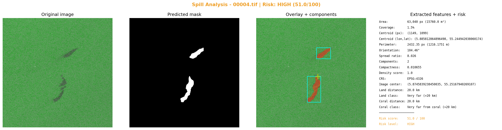

مركز الصورة: lon=5.8745839238450035, lat=55.25167940269107
مركز التسرب: lon=5.885812864896498, lat=55.244942038060174
التاريخ: 2023-01-13 21:02:06
التحليل البصري

التقرير
**تقرير تحليل تسرب نفطي باستخدام صور الأقمار الاصطناعية SAR**
١. الملخص التنفيذي
تم تحليل صورة أصلية من تسرب نفطي في موقع جغرافي محدد، وتم تحديد أن التسرب يقع على بعد 20 كم من اليابسة والشعب المرجانية، ويعتبر خطراً عالياً بنسبة 51% من المخاطر الكلية.
٢. الموقع الجغرافي والتاريخ
* نظام الإحداثيات: EPSG:4326
* مركز الصورة: (5.8745839238450035, 55.25167940269107)
* مركز التسرب: (5.885812864896498, 55.244942038060174)
* التاريخ: 2023-01-13 21:02:06
٣. الوصف الهندسي للتسرب
* المساحة: 63,040 بكسل (15760.0 م²)
* نسبة التغطية: 1.5%
* المحيط: 2432.35 بكسل (1216.1751 م)
* مركز البقعة (بكسل): (1149, 1099)
* زاوية التوجّه: 104.46°
* نسبة الامتداد: 8.026
* معامل الانضغاط: 0.010655
* عدد البقع المنفصلة: 2
٤. القرب من اليابسة والشعب المرجانية والأثر البيئي
* المسافة من اليابسة: 20 كم
* التصنيف: Very far (>20 km)
* المسافة من الشعب المرجانية: 20 كم
* التصنيف: Very far from coral (>20 km)
٥. تقييم الخطورة
* Risk Score: 51.0 / 100
* Risk Level: HIGH
* العوامل:
* coverage 1.5% → MINIMAL (<2%)
* spread_ratio 8.026 → HIGH (5-10)
* components 2 → MEDIUM
* density 1.0 → CRITICAL
* land 20.0 km → LOW
* coral 20.0 km → LOW
٦. التوصيات
* إجراء دراسة تفصيلية لتحديد حجم التسرب ومداه.
* وضع خطة للقضاء على التسرب وتقليل أثرها البيئي.
* مراقبة الموقف بشكل دوري لضمان عدم زيادة خطر التسرب.
٧. الملاحظات
* يجب أن يتم إجراء دراسة تفصيلية لتحديد حجم التسرب ومداه.
* يجب وضع خطة للقضاء على التسرب وتقليل أثرها البيئي.
* يجب مراقبة الموقف بشكل دوري لضمان عدم زيادة خطر التسرب.